אגף הרווחה · עיריית שדרותקמפיין ליום המאבק באלימות במשפחה
בהפקת
משפחה מתארגנת לתמונה משפחתית. האישה מזיזה אותו לקצה הספה, מתקנת אותו, מסירה את היד שלו, מבטלת אותו מול הילדים. הילד הקטן מחקה אותה. ואז היא מסמנת לו עם שתי אצבעות: תחייך. קליק. בתמונה כולם מחייכים. אחרי הצילום הוא יושב באותה תנוחה, בלי החיוך.
לפי בקשתכם, הסרטון ייווצר מחדש עם משפחה חילונית. לפניכם שלוש משפחות, בכל אחת האב, האם והילדים.
אב רזה ושקט עם שיער קצר; אם ג׳ינג׳ית עם בוב ומשקפיים.
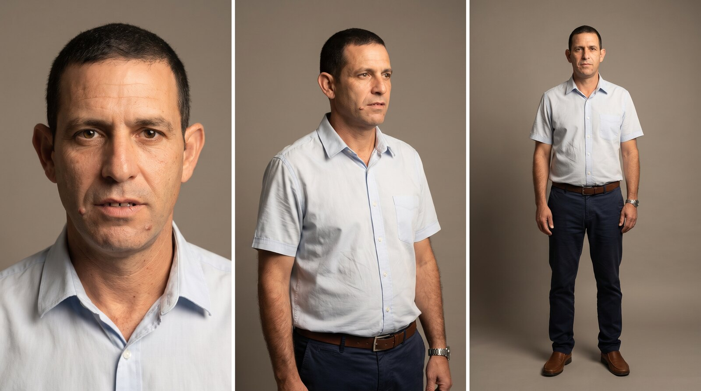
האב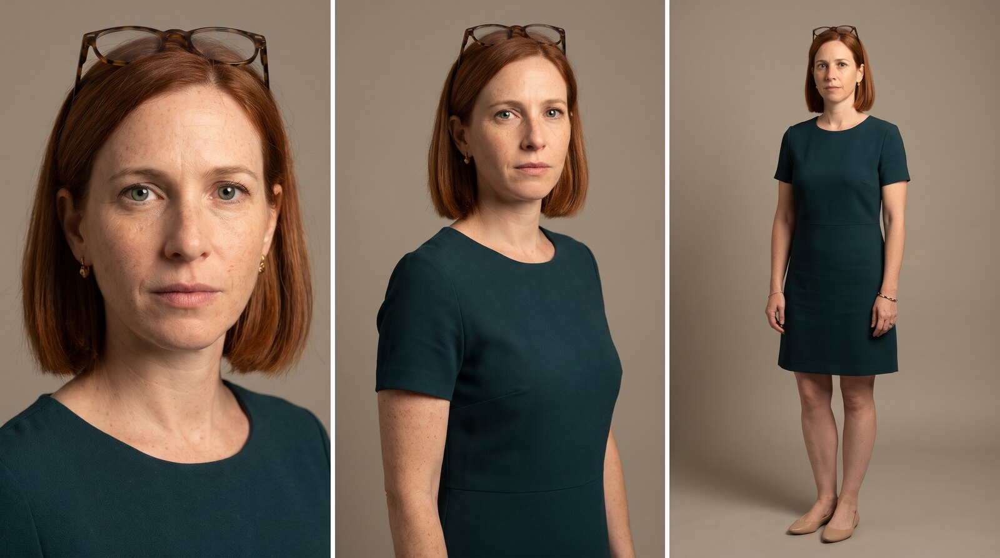
האם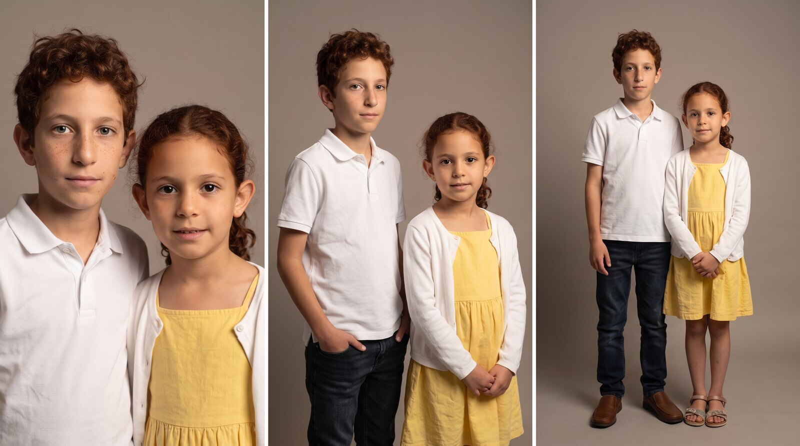
הילדים · אפשרות א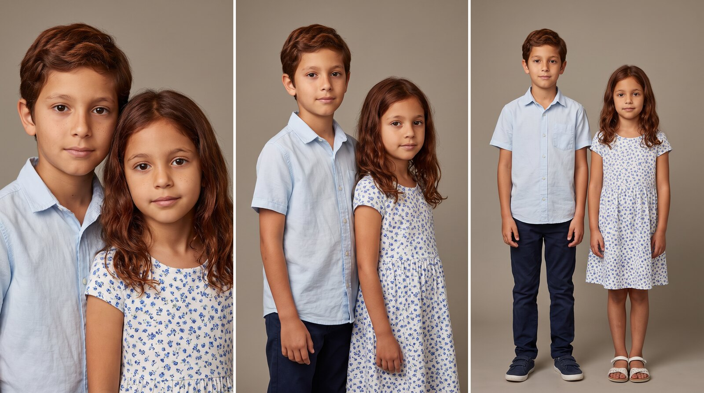
הילדים · אפשרות באב עם משקפיים ושיער מאפיר; אם גבוהה עם גוונים בשיער.
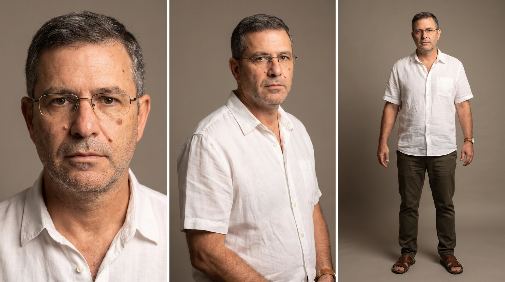
האב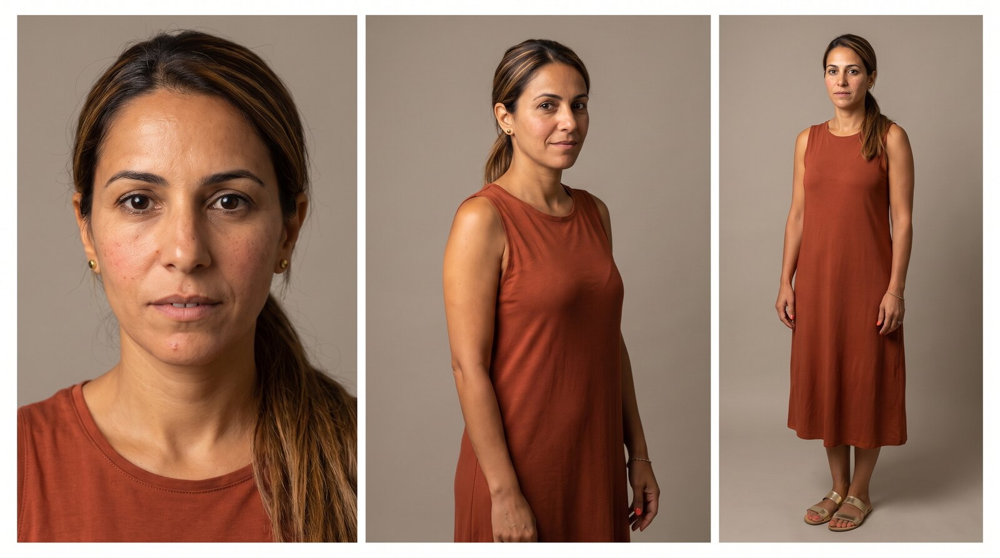
האם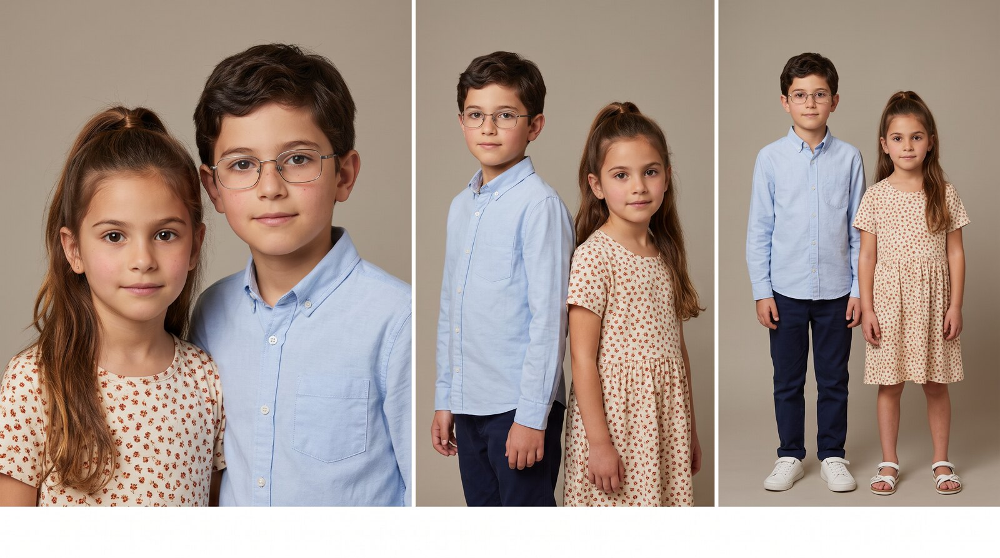
הילדיםאב עם משקפיים ושיער קצר; אם עם שיער חום לכתפיים.
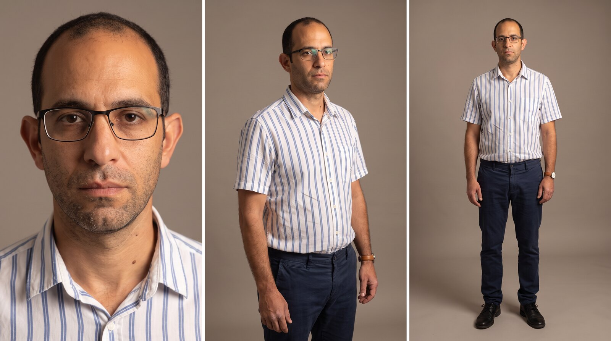
האב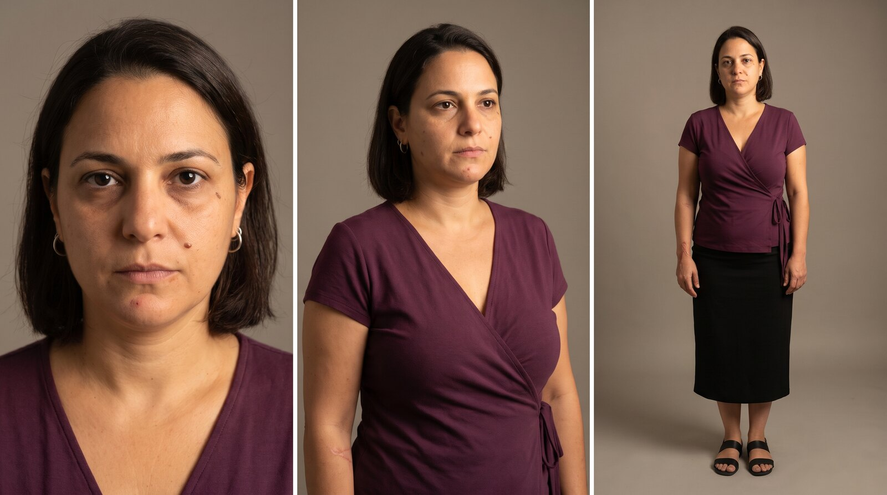
האם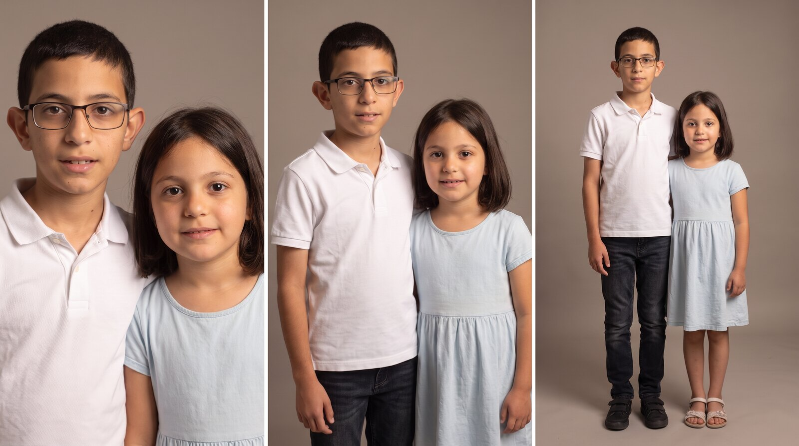
הילדים · אפשרות א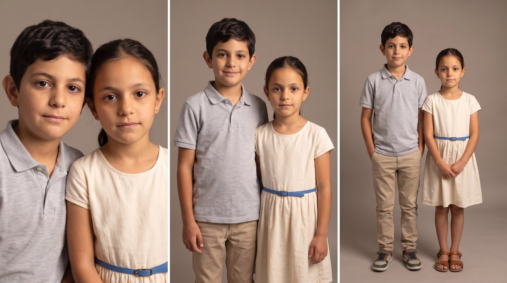
הילדים · אפשרות בהגרסה הנוכחית לצפייה. קו הסיוע והלוגואים הסופיים ייכנסו לכרטיס הסיום עם קבלת הקבצים.
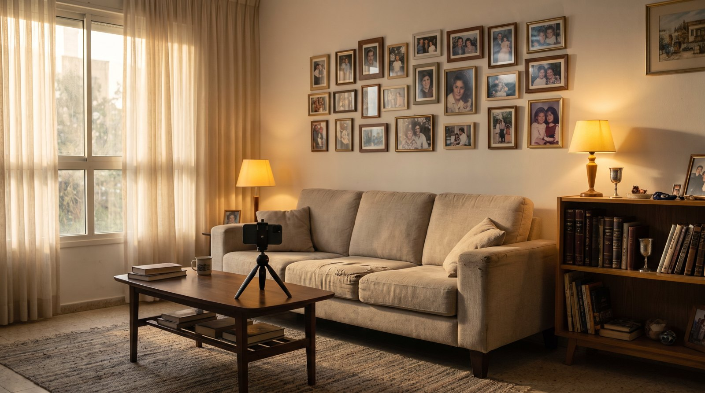
הסלוןספה בהירה מול קיר תמונות משפחה, חלון גדול עם אור אחר הצהריים, ספרייה עם ספרי קודש, הטלפון על חצובה קטנה מול הספה.אותו כרטיס בכל חמשת הסרטונים: שורה שנותנת שם למה שראינו, "אפשר אחרת", הלוגואים וקו הסיוע. המספר והלוגואים הסופיים ייכנסו עם הקבצים שתשלחו.
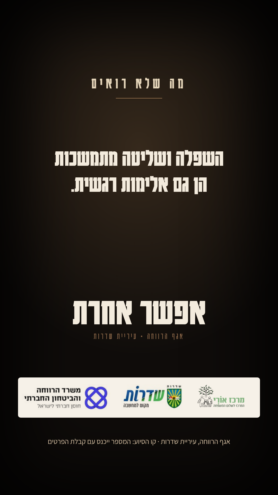
"השפלה ושליטה מתמשכות הן גם אלימות רגשית." ואז "אפשר אחרת", שלושת הלוגואים וקו הסיוע. התבנית שאושרה (קולנועי); המספר והלוגואים הסופיים לפי הקבצים שיישלחו.לכל שוט: מה רואים, מה שומעים, איך המצלמה מצלמת, מה האור והקומפוזיציה, ומה הצופה אמור להבין ברגע הזה. התזמונים הם הנחיית עבודה; האורך הסופי של כל סרטון נקבע בעריכה לפי הנרטיב והעברת המסר, בטווח 20–40 שניות.
כל הטקסטים נבנים בעריכה, בעברית, באזור הבטוח של אינסטגרם. הנוסחים כאן לאישורכם.
חמשת הסרטונים מופקים דרך Efect, בהובלת אוראל לוי: תסריט, בימוי, יצירת הדמויות והסצנות, עריכה, סאונד וטקסטים, עד חמישה סרטונים מוכנים לפרסום.